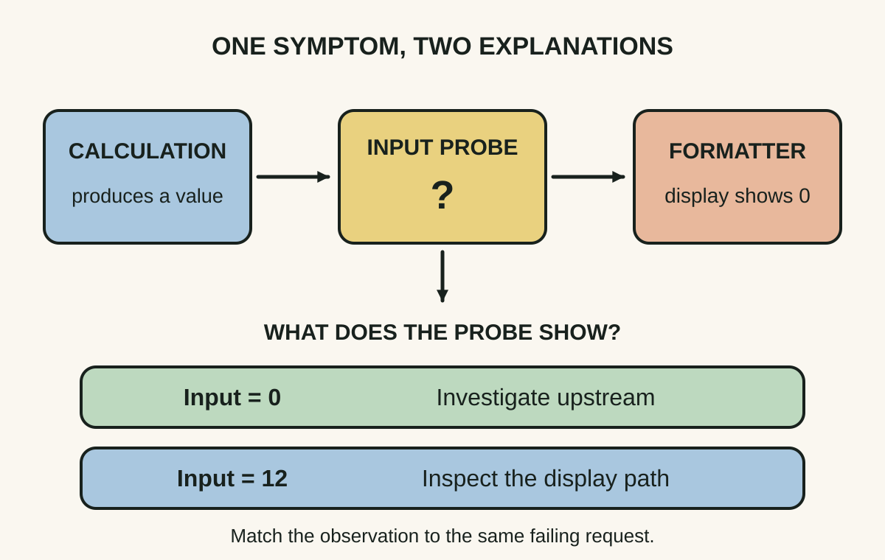
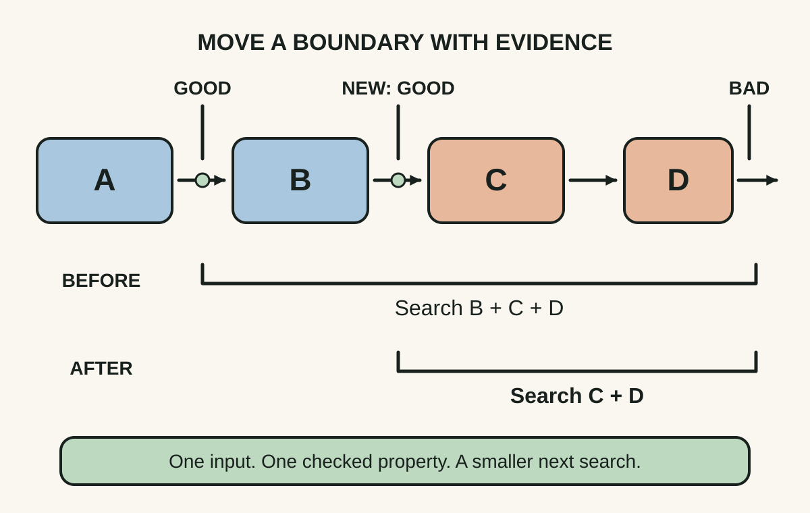
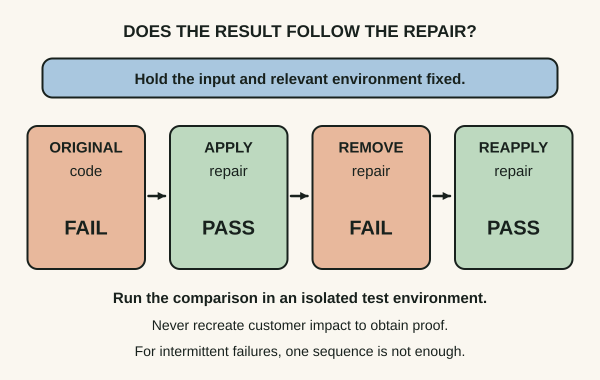

Daily lesson ·
Debugging
Observe the failure at a useful boundary, narrow the region where behaviour first goes wrong, and show that the proposed repair changes the original failing case.
Idea 1
Observe the boundary #
The idea
Agans asks the debugger to inspect what the system actually did. His observation rule includes adding instrumentation and using a guess to decide where to look. A plausible explanation should guide the next measurement rather than stand in for it.
The useful observation is often inside the system: a value, message or state transition between stages. Looking only at the final symptom can leave several different causes consistent with the same evidence.

Why it matters
Teams can spend hours debating a calculation bug when the display layer discarded a valid result. One well-placed observation can make that disagreement testable without changing the behaviour under investigation.
Apply it today
For one defect, write the expected and actual output. Then list two places that could plausibly produce the discrepancy.
Pick a boundary between those places. Record the actual value and the request or test case it belongs to; compare it with your predictions before editing code.
Caveat or failure mode
Instrumentation can alter timing, and a log can describe a different request or an earlier state. For a race, prefer existing traces or low-impact capture and check whether probing changes reproduction. Record only the data needed; do not log credentials or personal payloads to make a trace convenient.
Idea 2
Shrink the suspect interval #
The idea
Agans’s divide-and-conquer rule turns a large search into a smaller one. Find where behaviour is still as expected and where it has become wrong, then inspect an intermediate boundary to decide which region deserves the next investigation.
The point is to reduce the remaining possibilities with each observation. A useful split follows the system’s actual path; a visually central box on an architecture diagram may reveal very little.

Why it matters
A written bracket prevents aimless movement between components. It also makes a handover useful: the next engineer sees which boundaries were checked, under what conditions, and what remains uncertain.
Apply it today
Draw the path of one failing record or request as four to six stages. Mark only boundaries for which you have an actual observation from that case.
Choose an informative, affordable probe inside the remaining interval. After running it, move one endpoint and write the smaller region that still needs inspection.
Caveat or failure mode
This works only if the observed property and path support the split. A stage can appear correct while carrying hidden corrupt state; multiple faults can mask each other. Revision bisection also needs reliable classifications and a suitable good-to-bad transition. An unbuildable revision is unknown, not evidence that the target regression exists.
Idea 3
Make the repair earn its name #
The idea
Agans distinguishes a symptom disappearing from a cause being repaired. His verification rule asks both whether the system is fixed and whether the change you made is what fixed it.
A restart, a quieter workload or a coincidental environment change can make a problem stop appearing. That may restore service, but it does not by itself explain the failure or establish a durable correction.

Why it matters
The evidence behind a fix matters when the defect returns or another engineer changes the same code. A captured failing case and a specific behavioural comparison are more informative than a ticket saying it worked after deployment.
Apply it today
For your next repair, keep the original failing input and write the observed assertion before changing the code. Confirm that the test fails for the intended reason.
Apply the focused change and rerun the same case, then check nearby behaviour. Record what was controlled, what changed, and which uncertainty remains.
Caveat or failure mode
Do not recreate an outage or undo a security repair in production to prove causality. Mitigate first and perform controlled comparisons in isolation. Intermittent defects need representative repeated runs and an explanation of the mechanism; a single fail-pass pair does not prove that a race is gone.
Knowledge check · 6 questions
Learning check
Answer all 6, then check your answers. Your first result stays in this browser, and each explanation appears after you check. A 3-question review can appear on the homepage from tomorrow.
6 questions not yet answered.
Today's experiment · 8 minutes
Turn a trace into a narrower question
- Minutes 0–2: use this synthetic case or an existing safe test trace. Three items cost 20 dollars each, with a 10% discount. The display should show 54.00 dollars. The trace records quantity 3, subtotal 60.00, discounted total 54.00, and displayed total 5.40.
- Minutes 2–4: draw the calculation-to-display path. Mark the last observed value that matches its expectation and the first that does not. Write two different transformations inside that interval that could explain the discrepancy.
- Minutes 4–6: specify one additional boundary value that would distinguish those explanations. Write the expected observation under each explanation before inspecting code or more logs.
- Minutes 6–8: write a regression assertion for the original case and the before/after comparison a proposed repair must pass. Stop at eight minutes; a narrower suspect interval is the goal, not an invented diagnosis.
Observable result: One annotated trace, a bounded suspect region, two competing explanations, and a discriminating next probe. You can point to the evidence that narrowed the search and to the evidence still missing.
Retrieval practice
Spaced recall
- From Designing Event-Driven Systems: what boundary would let you rebuild a view without repeating an external action?
- From Refactoring: how would you keep a structure change separate from a behaviour change while preparing a difficult repair?
- From Thanks for the Feedback: when a colleague disputes your diagnosis, which job might their feedback be trying to do, and how would you clarify it?
Verification
Source notes
These links support the attributed claims and edition details; applications and extensions are labelled in the lesson.
- Agans’s official book site: original publication and unchanged core content across editions; practitioner framing
- AMACOM book on O’Reilly: publication metadata and chapter 6 contents on narrowing the search
- Agans, chapter 5 preview and contents: observing failure, instrumentation and observer effects
- Agans, chapter 11 preview and contents: checking the fix and whether the repair caused the improvement
- Google SRE: Effective Troubleshooting; independent practitioner guidance on hypotheses, evidence and incident triage
- Official Git bisect manual: narrowing revision history and skipping untestable commits; current tool behaviour
One-sentence takeaway